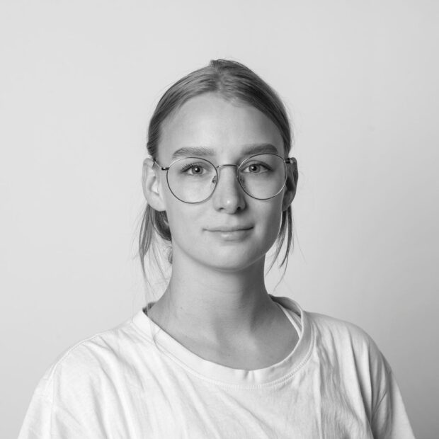

The Studio
We work between site and silence, drawing each building from the landscape it will inhabit.

Silje Skarheim — Founder, Architect MNAL
Silje Skarheim established her practice in Oslo in 2018, following a decade between Snøhetta and Jensen & Skodvin. The studio works at the intersection of heritage preservation and contemporary minimalism, ensuring every structure feels as though it has always belonged to the terrain.
Each commission begins with a long walk on site — not to record it, but to listen. The building that follows is a quiet response to what the land already says: how light moves through the season, how wind crosses the threshold, how the ground meets the sky.
The practice is small by intention. Silje leads every project personally, supported by a team of three. Work spans private residences, cultural pavilions, and adaptive reuse across the west coast of Norway.
Credentials
Education
Diplom. Arch., AHO Oslo, 2008
Visiting student, ETH Zürich, 2007
Affiliations
MNAL — Norske Arkitekters Landsforbund
Member, NAL Bærekraftsrådet
Recognition
Treprisen, nomination 2024
Houens fonds diplom, 2022
AR House Award, longlist 2021
Selected Press
Arkitektur N, Wallpaper*, Dezeen, Architectural Review, Form/Norge